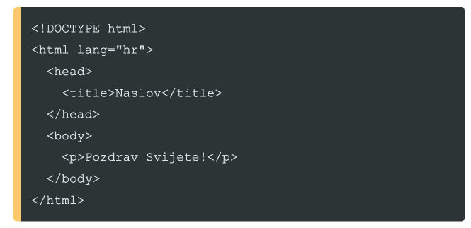

Sve je počelo 1989. godine u CERN-U.Tim Barners-Lee
je osmislio sustav koji bi istraživačima omogućio dijeljenje dokumenata.
Taj sustav postao je poznat kao World Wide Web.
sli.
Jezik koji je definirao strukturu tih dokumenata,nazvan je HTML
(Hyper Text Markup Language).Njegova osnovna svrha bila je semantički
opisati strukturu dokumenta, a ne njegov izgled.
Ključne verzije
- HTML 1.0 (1991.)
Prva neslužbena verzija sadržavala je samo 18 tagova.
- HTML 2.0 (1995)
Prvi službeni standard (RFC 1866)
- HTML 3.2 (1997)
Uvedene tablice i spleti. "Rat preglednika" je bio u punom jeku. "
- HTML 4.01 (1999)
Dominantna verzija skoro desetljeće.Odvajanje stila (CSS) od sadržaja.
- HTML5 (2014).
Revolucija Multimedija bez dodataka (˙video´ i ˙audio´ ,semantički elementi.
Struktura dokumenta
Osnovna struktura HTML 5 dokumenta izgleda ovako:

Da biste spremili ovaj kod pritisnite C t r l + S na tipkovnivci.